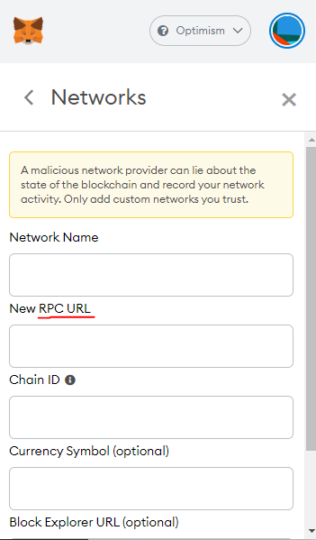

Rollups and Sidechains¶
If you used Ethereum until around May of 2020, you may have noticed the fees were absurdly high. Too high to justify sending Ethereum, much less using a smart contract.

Image Source: Coin Metrics Network Data Charts
This problem arose because there was simply too much demand, for too little block space. If Ethereum is ever going to see a worldwide adoption, then significant effort needs to be made to revamp how we submit transactions to the blockchain. The blockchain needs to be scalable. They need to be almost much faster than they are now, almost instantaneous. They need to be cheaper, fractions of pennies. Most importantly, these things need to be predictably low.
Part of the reason why I, and many other crypto-fans, dislike Bitcoin is its scalability issues. As it grew in popularity the fees became way too high and the times way too long for it to be a medium of exchange. That’s where the store of value narrative comes into play. It’s simply not practical to exchange with Bitcoin, so people started discussing it as an asset only worth holding. Without changes and updates, Ethereum could go the same way as fees and execution time rise significantly.
Luckily, the Ethereum community has been hard at work on this problem for many years now, and it seems that they have come to a form of consensus on the solution: Layer 2. Using a series of intricate mathematics that even I barely understand, a layer-2 system has the potential to dramatically scale Ethereum hundreds of times over and eliminate the transaction fee problems. It is currently the best proposed-solution to help scale Ethereum, without sacrificing decentralization and security. However, it does come with some problems, and is by no-means a silver bullet.
Block Space¶
If you’ve read some of my previous posts about block-size,, you’d know the problem with scalability is that block space is inherently very limited. Without increasing size, only a certain amount of transactions can fit into each block. This creates a natural bottleneck that forces up transaction fees as people bid to be included in that limited space. This causes the price of a transaction to rise to incredible heights as people continue to outbid each-other for limited space. Eventually the price gets so high people start to back-off transactions because it’s not worth it to do so anymore. It’s not worth it to send a $5 transaction if it costs $10 to be confirmed.
The natural solution is to find a way to increase the amount of transactions that fit into a specific amount of space, thereby making each transaction data more efficient. This way you can fit more transaction data into a statically-sized block, without having to increase the size. The way this is done is by computing transactions off-chain, and moving it on-chain later. This is known as a Rollup
Rollups¶
Everyone has dealt with a ZIP-File. It’s a compressed version of something. It takes the info in the original file and does some data re-organization to make it smaller. When a file is compressed, the original data is replaced with instructions on how to rebuild it. When the file is expanded, the computer takes those instructions and rebuilds the file exactly how it was before.
Imagine you had a data structure with the numbers 0,1,2,3,4,5,6,7,8,9 and you wanted to compress that. You would essentially replace it with instructions that said “single-item array with numbers 0-9”. That information tells you how to re-create the original information later. This is incredibly simplistic but is the basic concept.
This idea is part of what makes “roll-ups” work. It is taking a large-bundle of transactions, and distilling it’s information down to fit into the space of a regular transaction. BUT, when you unroll it, you can prove the validity of each transaction inside it. This system means that in the space of what is normally one-transaction, there could be thousands. This allows Ethereum to scale-up thousands of times over, without having to sacrifice decentralization by increasing block size. It also means that when transactions are bundled together, the transaction fee for each one goes down. If the rollup costs 0.1 Ether to process, and the rollup contains 500-transactions then the fee gets split ~500 ways, making it so-low as to be near-zero.
These roll-ups work in a very complicated way, involving a lot of high-level mathematics. Don’t worry, I’m not going to explain how it all works because its confusing to me too, but I’m going to hit the highlights.
If you have an Ethereum address and wallet, you also have an equally valid wallet on layer-2. One mnemonic seed phrase can be used to generate the same wallet on each layer-2 network and side-chain. For example, if your wallet address is 0xaB5409b0E5a66AcC9D63f668414539A60a5917C1, then it is the same thing on Optimism, Polygon, xDai, etc. However, they are separate from the main chain. Just because you own 1 Ether on mainnet, you do not own 1 Ether on layer-2, unless you specifically acquire it by someone sending it to you.
If you own an ENS domain, then you own it for the Ethereum main-net. This can mean making some planning as to which network you plan to use as your primary one, and registering an ENS domain there. ENS contract registrants are unique to that chain. It doesn’t matter if you own it on Skale , if you’re never going to use that network.
The benefit of a roll-up, is that there is a 1-1 relationship between moving funds onto layer-2. 1 Ether on main-net means you can move it to layer-2 and have exactly the same amount to spend. The same logic with tokens on layer-2 as well.
How Roll-Ups Work¶
- Using a roll-up has 4 steps:
Users submit a transaction request to a roll-up node. This node is known as an “aggregator” and is specially made to process roll-ups. From the viewpoint of the user, this is done exactly the same as submitting a regular transaction. It might require a special wallet, or to configure your wallet to a specific network. However, once you’re configured you send transactions exactly the same as normal.
The roll-up node waits as hundreds or thousands of transactions roll-in (pun intended), and bundles them together. It does a lot of math on them all, and generates a mathematical-proof. This proof can be used to verify the validity of each transaction inside the roll-up. This proof basically says “this is what the state of the blockchain would be if these transactions were processed on-chain. I did that computational work ahead of time, and now you just need to accept the work I did”.
The node submits that roll-up information to the main Ethereum chain. This means that layer-2 solutions are secured by layer 1. It takes advantage of the security provided by the underlying blockchain without having to develop some of its own.
The roll-up is placed on chain if valid, and transactions finalized.
As a user, you would never know this process is occurring. To you, it only looks like sending a transaction with very quick confirmation and low fees. Once again, this is incredibly simplistic and ignores a lot of smaller details, but that is at the core how it works.
There are two kinds of rollups: Optimistic and Zero-Knowledge.
Optimistic Rollups¶
You should think of an optimistic roll-up like a roll-up for generalized-smart contracts. This means that optimistic roll-ups are very broad in their scope, and theoretically any contract can be deployed here, as long as it would work on layer-1 main-net. It is capable of processing any-transaction, whether it’s a smart-contract call or a simple-ether transfer. This is what makes it so powerful, it is incredibly broad in the scope of its abilities.
The way this works is by having a version of the ethereum-virtual-machine (EVM), the program that processes transactions, off-chain. If you’re not a tech-nerd don’t worry too much about this. The EVM is simply the program that nodes use to process and finalize transactions.
This layer 2 version is known as as an optimistic-virtual machine (OVM). It has all the capabilities, and exact functionality of the regular EVM. It is different as it is deployed somewhere else, and processes layer 2 transactions, instead of layer 1. Think of it like a copy. In layer 1 world, a developer deploys their contract by running it through a layer-1 node running the EVM. On layer-2, the developer deploys the same-contract to this OVM, instead of the EVM on the main-chain.
There are different VM’s (virtual machines) run by different networks, and use different languages. Some allow your contract to be written in Solidity, the language of Layer-1 contracts. Some have you use a specific layer-2 language called Cairo, etc. Developers deploy their application to one of these OVM’s and then have users interact with it the same way they would the main chain. Regardless of what language it is written it, once it is deployed you theoretically should be able to interact with it the exact same way.
The important thing to remember, is that the OVM does NOT natively check these transactions as they come in for validity. Kind of how layer-1 relies on other nodes to negate invalid transactions. Instead, it relies on the developers, users, and observers to validate. This is similar to the main-chain. The Ethereum-Virtual-Machine would process an invalid transaction, but ultimately it would fail as other nodes would reject the block it is included in. The OVM works the same way. With safety-nets and input-validation systems by the developers, an invalid transaction would get stopped long before it is included in a roll-up. Preventing invalid transactions is a multi-tiered approach. Kind of like how when approaching a secure area, you may need to go through multiple toll-gates, submitting a rollup-transaction requires multiple validation-steps/ But, when you get through them all you can feel incredibly confident your transaction will go through.
When the OVM is done processing the transactions, it submits its proof to the main-chain on layer-1, through a smart contract. The smart contract does NOT validate, only submit a request for a rollup to be accepted. Since anyone can see this rollup on-chain, anyone can attempt to negate it if they think something malicious is happening. The contract used by the roll-up submitter also has a function where someone submits a fraud-proof of how exactly the batch of transactions is invalid. This may be because of a math error, a malicious or incorrect transaction, etc. If the contract verifies the fraud-proof, then the entire batch of transactions gets rolled back. The period of time where someone may submit a proof is known as the fraud-proof-windows. Fraud-proofs submitted after the window, are not accepted, and at that point all transactions are considered finalized. This window can last up to 3-weeks. While anyone can audit these manually, the sheer amount of information, in its raw state, is difficult to parse through. It could all be done by hand, but that would be a difficult and time-consuming process. Dedicated and particularly altruistic individuals will end up running special-software to automate this process.

Wait, so it takes 3-weeks for my transaction to be finalized? And it can be rolled back at any point before then if one-person decides to be dishonest?”
Yes and no. Technically, the transaction could be rolled-back during that period. BUT, it wouldn’t if you act honestly. If you act honestly you can feel confident that once the initial batch is published, your transaction is as good as finalized.
Think about it like the main-chain. When you submit your transaction it goes into a pool of pending-ones. Miners choose to pick up your transaction and include it because it is honest, and will not get rejected by the other nodes. Layer-2 works the same way. Operators of the Layer-2 OVM nodes will look at your honest transaction and include it in their roll-ups because it won’t be invalidated later. They will choose not to include invalid transactions because of the penalties they incur for doing so. This is accomplished through a mix of honesty/trust, input validation from developers, and vigilance.
The most popular Optimistic rollup services currently are Arbitrum and Optimism
ZK-Rollups¶
A ZK-Rollup stands for Zero-Knowledge Rollup, and is more targeted than an optimistic-one. Unlike optimistic rollups, ZK-Rollups are more specific and must be built for specific actions. Where an optimistic-rollup can support any arbitrary smart contract, a ZK-Rollup must have a smart contract built for a very specific task to process. This can be transactions, atomic swaps, specific contract-executions, etc. but must be planned ahead of time, and the logic of the contract cannot be easily modified.
The Zero-Knowledge part of it is a complicated mathematical concept whereby someone can prove that they are in possession of information without having to disclose what that information is. This is called a Zero-Knowledge Succinct Non-Interactive Argument of Knowledge (ZK-SNARK). Imagine a tunnel with a door in the middle that requires a password. If someone comes in one side and out the other, you know the only way that’s possible is because they know the password. However, they don’t need to tell you the password to be able to prove it.

Image Source: Teresa Alameda, BBVA Creative
This logic can be applied to batching transactions together on the blockchain. By submitting a ZK-Rollup, you can verify that each transaction within it is valid, WITHOUT having to send all the information on transactions to go with it.
How exactly this is accomplished is the subject of heavy mathematical research, and not important to the scope of this article.
Unlike optimistic rollups, transactions are checked for validity when being processed on-chain. The ZK-Rollup has a smart contract that the batch-nodes submit to. This contract does check each transaction to verify it is acceptable. This means that when the rollup is accepted, you can feel confident it is final, and cannot be rolled back. An invalid transaction would not pass the on-chain validity-check. There is still an element of validity checking before then though, as batch-node operators and applications have a role to play in preventing you from doing things you should not be doing to begin with. Unlike optimistic rollups, ZK-Rollups use lower transaction fees on-chain, as their smart contract only has to verify information, rather than computing anything new. Optimistic rollups still have to do some on-chain computation to make state-changes to the network, but it is still inconsequential to the individual user of the rollup.
Because of the on-chain verification system, many zk-rollup protocols require your deployed-contract be written in a different language than a layer-1 contract like Solidity . On Starknet, the most popular ZK-Rollup protocol right now, this language is known as Cairo . There are however, projects in development like ZK-Sync [link needed], which aim to create a general-purpose ZK-Rollup system where any contract can be built in Solidity. It is also important to note that because each batch must be verified, it creates a much higher computational-burden on nodes to do the required complex-mathematics.
This protocol has other benefits as well, creating things like increased anonymity from not having to disclose every transaction to the public chain. This is how coins like ZCash operate.
Sidechains¶
You might have heard of something called a “Side-Chain”. This is something that works VERY-similarly to Ethereum but is not Ethereum. A side-chain is simply an independent blockchain, that uses various elements of Ethereum within it. When you use a side-chain, you are not using Ethereum. Each side chain has its own native-coin that is used to pay transaction fees. Almost all of the main ethereum wallets support transactions on side-chains however. A side-chain operates in parallel to Ethereum, constantly reporting information back to it. However, it has its own applications, native tokens, consensus mechanisms, etc. When using a side chain, sending transactions and interacting with Dapps is exactly the same as the Ethereum mainnet, with a few configurations beforehand. All Ethereum addresses exist on every side-chain. Your seed-phrase can be used to access the same address on every sidechain. Most of the popular wallet softwares are compatible with sidechains as well, and can be accessed with very little configuration.
The most popular is known as Polygon (MATIC). Polygon is the name of the chain, and coin, and its symbol is MATIC. They are the same thing. Kind of how Ethereum is the name of the platform, and Ether is the name of the native-coin.
The benefit of using a side chain is that they implement different ideas that are yet to be included on the Ethereum main chain. For example, Polygon scales faster than Ethereum, because it uses a proposed solution known as Plasma as well as a version of Proof of Stake, deployed before the Ethereum mainnet. This allow them to operate with more throughput and lower fees than Ethereum, through experimental features. Similarly, some of them have done this by sacrificing on things like decentralization, ease of use, etc. I’m not going to elaborate on how Plasma works, as it’s not important right now.
By reporting information back and forth, they can benefit from utilizing existing software and infrastructure without having to build their own. For example, a smart-contract can be deployed onto Polygon, from Ethereum, with ZERO code-changes. As a developer this is a huge draw, especially as many side-chains include very-low fees. Similarly, existing Ethereum-wallets can be utilized to work with side-chains with minimal-configurations. If they were to be their own blockchain, it would mean developing new tools and software from-scratch, which is a very costly and time-consuming endeavor. Similarly, it allows people to easily move-funds between networks if needed. A stand-alone blockchain would have no native-interoperability with the main Ethereum chain.
To get your coins onto this network so they can be spent, you may have to use something called a bridge. A bridge is simply a set of smart contracts existing on each chain. You deposit funds into a contract on one-chain, and then withdraw an equal-value amount of tokens on the other.
For example, if you send 1 MATIC token on the Ethereum mainnet to the bridge contract, then your Polygon wallet will be credited with the same amount, spendable exactly the same. However, when you send Ether into the side-chain bridge, the protocol will mint an equivalent-value of MATIC Coins. Depositing 1 Ether into Polygon may mean you receive 3,000 MATIC, but the USD-value of the two-coins should be equivalent (or at least very close). This is because Ether has no use in the Polygon ecosystem, and MATIC has none in Ethereum. You can still use a tokenized-version of Ether in Polygon, but you can’t pay transaction fees with it. The opposite is true with Matic on Ethereum, you can use MATIC token for things, but fees must be paid in Ether. It is a token that has a dollar value, and can be traded, but until you move it to its native-chain, it doesn’t do much. If you deposit 3000 MATIC onto the Polygon side of the bridge, you should get back 1 Ether on Ethereum. If you have 1 Ether on the Polygon chain, and want to turn it into MATIC, you have to use a decentralized-exchange (like Sushiswap) to do so.
They are used to keep track of token exchanges between networks. If you want to spend your Matic on Polygon, you first need to acquire Matic. This can be done by either moving your coins over a bridge, to the side-chain, or by having someone else send MATIC to your wallet.

xDai is a side-chain of Ethereum, but has different rules. In the xDai network, all transaction fees are paid in xDai, which maintains a 1-1 Peg to Dai, the USD-stablecoin, that always values at 1$. When you send xDai back through the bridge to the main-net, each xDai is converted to regular-Dai, at a 1/1 rate. When you send Dai from Ethereum to xDai, it becomes xDai.
There are a variety of different side-chains, each with their own properties, values, and applications. Deciding which one is right for you and your applications is dependent on a variety of factors beyond the scope of this article. Do some research and it’s very easy to find the ideal solution for you.
A side chain is not technically a layer 2 solution, because it is parallel to Ethereum instead of being secured by it. However, for the sake of simplicity, and because the user experience is so similar, I am lumping it in with layer-2 for the sake of a more cohesive explanation. I did not feel it needed its own article, and could justifiably be included here.
Sidechains vs rollups¶
While side chains and rollups have a user-experience very similar to each-other, they are not the same. The fees may be low, the onboard process the same, and the application interface identical, but they are separate. This is because when you use a rollup, you are still spending Ether. Rollups sit on top of Ethereum, making it a method to enhance the experience of spending Ether. Using polygon side-chain means spending MATIC coin, and using Optimism means spending Ether. Now, this might not mean a whole lot but can be a substantial difference. For example, Ether is priced-higher than MATIC by thousands of times, and so in cases like DeFi, lending your Ether can be a great investment, as opposed to lending Matic. Many applications are currently ONLY deployed on the Polygon or xDai networks. You can send Ethereum over to Polygon, and spend Ether on it. However, you still must pay transaction fees in their native currency, MATIC. Since MATIC is an erc-20 token on Ethereum, you can send it over a bridge to Polygon as well. There are many tokens with both a mainnet and a polygon deployment. If this is the case then a token can be freely moved between the two.
This works because a Layer-2 uses the base-layer of Ethereum for security. Some would say this is better than a sidechain because Ethereum has a lower chance of things like a 51% attack and better security protocols than smaller sidechains like Polygon. Side chains instead rely on their own security protocols, which is not to say are more insecure, but presents its own set of challenges. When Ethereum makes a critical and useful update, sidechains don’t get to benefit from it like rollups do.
It should also be noted that while it is possible to transfer funds between networks, this can often be a costly and time-consuming process depending on which bridges you are using, and the direction you are using them in.
Joining Layer-2¶
Using a layer-2 provider is a very simple process, only requiring a little-bit of configurations. I’m going to walk you through the process of on and off-boarding using Metamask
I’m going to jump forward and assume you’ve already got a metamask account set up. If you don’t feel free to click-here , and see how.
All we need to do is configure Metamask to check your balance, and send transactions, on a different set of node. This is a very simple procedure. First, open your metamask wallet and click on the top button labeled Ethereum Mainnet

This will show you the list of all Ethereum networks pre-loaded by Metamask, and can be easily switched to by you.
You can ignore all of the ones labeled Testnet. These are alternative networks used by developers to help build and test their applications before deploying to the mainnet. They are irrelevant to us.
Click on the option labeled Custom RPC, and you should see a form pop up. This is where we will input all the configuration information needed for metamask to process information. If you already know which network you would like to join, their website should have given you the information needed to fill out this form. If not, i’ve included some below, with some of the most popular networks to help give you an idea.
Network Name |
RPC URL |
Chain ID |
Currency Symbol |
Block Explorer URL |
Optimism |
10 |
ETH |
||
xDai |
0x64 |
xDai |
||
Polygon/Matic Mainnet |
137 |
MATIC |
The Block Explorer URL is the website in which you can see the information regarding your address and/or transaction made on the network It is recommended you fill in all fields, including the optional ones, so that you can properly identify all relevant information to your address for each transaction.
If everything was input and saved correctly, you should now be on the Layer-2 network. You can select which network you are using by selecting from the dropdown menu at the top. Metamask should update your shown balance when switching networks. When using the layer-2 network, all transactions and balances are routed through the specific layer-2 nodes. This is what the field RPC URL is for.
Bridges¶
- Now that we’re on layer-2, we need to add some coins we can spend. We have two choices on how to do this:
Have someone send layer-2 coins to our address.
Move funds from another network via a bridge. This is what we will do now.
Sending funds via a bridge is as simple as using any other smart-contract. First we visit the website for the bridge. As these can be easy targets for fraud, pay attention to the website you are visiting, and only interacting with trusted ones.
From here, you simply follow the on-screen instructions. You input the amount of your coin/token you want moved across the bridge and it tells you how much you can expect in return. This amount will vary based on factors such as transaction fees. It should be noted that this is still a smart-contract interaction, and any funds movement must still be paid for in that chain’s native coin. Moving Ether to Polygon means paying the fee in Ether. Moving it back means paying a fee in MATIC, and so on.

If you are sending a token across the bridge, instead of the native coin, you may first be prompted to execute a transaction to approve the application to move funds. This is normal. This is due to how token contracts work, in which the smart contract needs you to grant it permission to move your tokens for you across the bridge. This transaction must be executed before the funds movement occurs.
Each bridge may take a different amount of time to finish execution, based on the destination-network rules. Be patient and follow their instructions. From there you simply wait for your coins to appear in your layer-2 wallet.
To remove funds from the layer-2 network, the process is almost identical. Simply visit the bridge website, and follow the instructions.
BE AWARE depending on the way in which the layer-2 network operates, there may be a substantial lock-out period for this to occur. On Optimism, this is currently 1-Week. This is done for the safety and security of the network. Once your transaction is submitted and processed, you will have to wait-out the period before funds appear back in your main-net wallet. Withdrawal requests CANNOT be canceled once submitted. Be aware of this when moving any funds between networks, and plan accordingly.
Issues¶
If you’ve read this far, you may have noticed that there are some very obvious costs and benefits associated with this model. They are not insurmountable, but will require substantial research, effort, and time to overcome.
User Experience¶
If we want cryptocurrency to be adopted by the masses, it needs to be easy to use. Layer-2 is not exactly the easiest idea to comprehend. It is even more difficult to convince a new user to use it. Onboarding new users to Layer-1 blockchains is already quite difficult. People are apprehensive (justifiably) about being in charge of their own security. People don’t understand how addresses, transaction fees, smart contracts, etc. work and how to use them without extensive explanation. Even with the guide of a seasoned-veteran, it can be difficult to explain to new people both why they should use it, and how. The trend towards layer-2 makes this process even more complicated. Everyone knows at least one old-person who doesn’t use online banking and still goes to a bank to deposit a check. Those people are never going to install metamask on their computer and go use uniswap. They’re definitely not going to do all of that, and then go through the steps to add a layer-2 network and onboard themselves. I consider myself a power-user of Ethereum, and even I can often feel confused and lost in all of this. None of this even addresses the fact that people are not going to be happy about an off-boarding process that has a mandatory week-long waiting period. The trend towards layer-2 is great for the crypto-veteran, but not the average citizen.
- This issue has 2 paths forward:
Design needs to be as easy to use as Venmo and online banking. On-boarding to layer-2 needs to be the default. As of right now you can’t do that. You cannot withdraw from any major-exchange directly to layer-2. The community needs to place a much heavier emphasis on good user-friendly design. New users need to be able to download a wallet that is automatically configured for a layer-2 like optimism, and it needs to be so seamless that you don’t even know that’s the case. It’s going to require that developers from across the industry coordinate to figure out what the standard should be.
Give up on layer-2 and focus efforts on Layer-1. This is what has given rise to a variety of alternative platforms like Cardano, Solana, and Algorand. While their tech is up-for-debate, their focus on layer-1 if successful will make it much easier to onboard new users. I don’t know if any of them will succeed in taking down Ethereum [link needed], but they have very valid points about the attractiveness of their platform because of it. Out-of-the-box layer-1 blockchain wallets are significantly easier than a layer-2-focused blockchain like Ethereum. The Ethereum foundation and community does recognize this issue, which is why sharding [link needed] is a part of the Eth 2.0 upgrade. Layer-1 will always be easier to use, and a future for Ethereum needs to reckon with this.
Interoperability¶
The second issue with Layer-2 is also a sub-set of the user-experience. There is no Interoperability between networks. As of right now, there is not a way to move funds between layer-2 networks directly. If you wanted to move Dai from Optimism to Polygon, you cannot do it directly. Your only option is to move it back to the main-net, and then from the main-net to Polygon. This system can be slow, costly, and all-around a terrible user-experience. There are lots of dApps that are only available on one-chain. This means moving assets around from chain-to-chain depending on what application you want to use, and forcing developers to choose where to deploy. There is also not yet any understanding of how this will work with multi-chain systems like Polkadot [insert link] or other cross-chain transactions. If you want to do something involving multiple applications and protocols, they must all be available on the same layer-2 network. For example, taking out a flash loan to use for Uniswap arbitrage requires that both Uniswap and the flash-loan protocol be on the same rollup system. As time passes it is likely that more bridges will be built to connect rollups, however this timeframe and the exact nature of which is uncertain.
It is also entirely possible that as Ethereum’s layer-2 scales, the need and popularity of side chains will diminish greatly. The lower fees and speed is what drives demand on many side chains right now. Similarly, users and developers may begin to naturally congregate around one-or-two rollups, instead of a fractured system that will naturally resolve this Interoperability problem.
Closing Thoughts¶
A lot of the things you might have read may have your head spinning right now. That’s ok. This is a very complex topic. One that some of the smartest people in tech are working day and night on. It often leaves me confused. The point here is that Ethereum is at a cross-roads, and how the community handles it will determine what the future of Ethereum looks like. It’s a community of incredibly dedicated individuals, who have already done so much to get to where we are now. I have no doubt that the people much smarter than me are going to get this figured out.
Layer-2 technology is still in its infancy, and the technology is being researched heavily as we speak. If reading this makes you feel uneasy about the future of Ethereum, then there’s no shame in diversifying your portfolio to include some of its competitors. A diversified portfolio is a health one. If it makes you feel more confident about Ethereum, then that’s even better. If you wanna take action, then be a part of the community and spread the word. Partake in public betas and play around with the new tech. Educate and try to on-board people you know. Researching about layer-2 made me feel a little concerned, but also hopeful about where the future of cryptocurrency is headed and the progress it makes every single day. I’ve personally been messing around with several of these networks, and once you’re on them, its a truly fantastic experience compared to layer-1.
I have NOT been compensated to promote any specific program or service. All opinions expressed are mine and mine alone. I am not responsible for any cryptocurrency lost due to the improper use of any application or program discussed here. Do your own research before using or investing in any service or application.